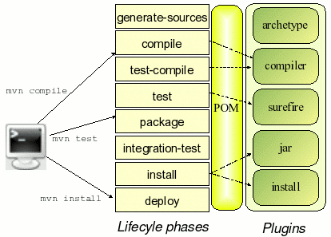

Découvrir Maven
Ninja Squad / @agnes_crepet
Objectifs de la session
- Compiler, packager, déployer une application java avec Maven
- Gérer les dépendances d'un projet avec Maven
- Comprendre les bénéfices de l'intégration continue
Maven : Naissance du besoin
Tous les projets ont besoin d'être compilés, testés, packagés, documentés et déployés.Pourquoi ne pas capitaliser?
Maven en une phrase!
Maven sait faire l’intégration d’un projet depuis l’extraction des sources… … jusqu’au packaging de l’application, en passant par l’exécution automatique des tests de non régression, et la génération de rapport qualité!
De Make à Maven!
Maven est né :
- De l’expérience et des insuffisances de Ant
- Du besoin de capitalisation des connaissances de la communauté Apache en terme de gestion de projet logiciel
- Maven 3.0 : première release en octobre 2012
le POM
La carte d'identité d'un projet Maven
C’est le lien entre le projet et Maven

POM : Project Object Model
- Il contient toutes les informations relatives au projet
- Maven s’en sert pour déterminer le processus de build
- Il doit y avoir 1 POM pour 1 artefact (jar, war, ear)
Exemple de pom.xml
<project>
<modelVersion>4.0.0</modelVersion>
<groupId>com.ninjasquad</groupId>
<artifactId>my-app</artifactId>
<version>1</version>
<packaging>jar</packaging>
<dependencies>
<dependency>
<groupId>junit</groupId>
<artifactId>junit</artifactId>
<version>4.12</version>
<scope>test</scope>
</dependency>
</dependencies>
</project>
Convention over Configuration
- src/main/java
- src/main/resources
- src/test/java
- ...
Spécifier très précisément vos dépendances avec Maven
- Nom de la dépendance : groupId & artifactId
- Version de la dépendance
- Type de la dépendance
- Portée : compile, runtime, test, provided
Maven, gérer les dépendances (1/2)
Maven vérifie que les dépendances sont honorées avant de commencer le cycle de construction ...Sinon, le build s’arrête!
Maven, gérer les dépendances (2/2)
Pour honorer ces dépendances, il faut obtenir les librairies correspondantes.
Elles sont stockées dans des repositories publics ou privés → Rôle des Repository Managers (Nexus, Archiva)
Nexus
PIC : Plateforme d'intégration continueLes mains dans le cambouis....
Installer Maven sur votre poste !
- Dezipper l'archive apache-maven-3.0.4-bin.zip, soit M2_HOME ce répertoire
- Settez la variable d'environnement M2_HOME et mettez à jour votre PATH
- Testez la ligne de commande suivante:
mvn -version
Les mains dans le cambouis....
Comprende les fichiers de configuration!
- M2_HOME\conf\settings.xml: situé parmi les binaries Maven, configuration par poste
- HOME\.m2\settings.xml : situé dans le répertoire utilisateur, configuration propre à un utilisateur
- A noter que par défaut votre repository est dans HOME\.m2 !
Les mains dans le cambouis....
Votre premier projet Maven !
- Lancer votre nouveau projet Java standard :
mvn archetype:generate -DarchetypeGroupId=org.apache.maven.archetypes -DgroupId=com.ninjasquad -DartifactId=my-app -DinteractiveMode=false - Aller voir votre projet (pom.xml, répertoires, fichiers)
Gérer les fichiers de configuration : pom.xml
- situé au niveau du projet et de chaque module
- il décrit la configuration spécifique à un projet ou un module
Cycle de vie et goals Maven (1/2)
- A chaque phase du cycle correspond un goal
- Par exemple :
mvn compile - Un goal est une commande Maven demandant la réalisation d’une étape.
- En lançant un goal, on passe également par toutes les étapes antérieures
- Portée : compile, runtime, test, provided
Cycle de vie et goals Maven (2/2)

Phases principales (1/2)
- generate-sources: Génère le code source supplémentaire nécessité par l'application, ce qui est généralement accompli par les plug-ins appropriés (Jaxb, …)
- compile: Compile le code source du projet
- test: Exécute les tests unitaires (typiquement avec Junit) depuis le répertoire src/test
Phases principales (2/2)
- package: Mets en forme le code compilé dans son format de diffusion (artefact JAR, WAR, etc.)
- install: Installe les artefacts produits dans l'entrepôt local, pour être utilisé comme dépendance des autres projets sur votre machine locale.
- deploy: Réalisé dans un environnement d'intégration ou de production, copie le produit final dans un entrepôt distant pour être partagé avec d'autres développeurs ou projets.
Les mains dans le cambouis....
Vos premiers goals
Amusez-vous sur votre projet à lancer ces différentes commandes
cd my-app(se placer toujours à la racine de votre projet)mvn clean installmvn test- allez lire la doc : maven.apache.org/guides
Les mains dans le cambouis....
Le site web de votre projet Maven
Faites en sorte de générer un site avec les rapports des tests unitaires de votre projet
mvn site- voir le plugin : http://maven.apache.org/surefire/maven-surefire-report-plugin/
Les mains dans le cambouis....
Les dépendances
- Rajoutez des dépendances dans votre pom.xml
- La choisir via l'annuaire http://mvnrepository.com/ par exemple
- Observez votre repository : HOME\.m2
Les mains dans le cambouis....
Installer Maven dans Eclipse
- via Help -> Eclipse MarketPlace
- Chercher le plugin Maven Integration for Eclipse
- Lancer la commande à la racine de votre projet :
mvn eclipse:eclipse - Ouvrez votre projet via Eclipse (Import Existing Maven Project)
- Apprenez à configurer des Executions Maven dans Eclipse sur votre projet (Run Configurations)
Les mains dans le cambouis....
Archetype Java Web
- Lancer votre nouveau projet web
mvn archetype:generate -DgroupId=com.ninjasquad \ -DartifactId=my-webapp \ -Dversion=1.0-SNAPSHOT \ -DarchetypeArtifactId=maven-archetype-webapp \ -DinteractiveMode=false - Aller voir votre projet (pom.xml, répertoires, fichiers)
Les mains dans le cambouis....
Archetype Java Web
Lancer un packaging de votre projet et le déployer dans Tomcat!
Les mains dans le cambouis....
Configurer une construction Maven pour le déploiement Tomcat
Les mains dans le cambouis....
Dans votre settings.xml, rajouter votre serveur tomcat et ses credentials
<server>
<id>myserver</id>
<username>tomcat</username>
<password>tomcat</password>
</server>
<server>
<id>myserver</id>
<username>tomcat</username>
<password>tomcat</password>
</server>
Les mains dans le cambouis....
Dans votre pom, ajouter le plugin tomcat7-maven-plugin (section build)
<pluginManagement>
<plugins>
<plugin>
<groupId>org.apache.tomcat.maven</groupId>
<artifactId>tomcat7-maven-plugin</artifactId>
<version>2.0</version>
<configuration>
<url>http://localhost:8080/manager/text</url>
<server>myserver</server>
<path>/my-webapp</path>
</configuration>
</plugin>
</plugins>
</pluginManagement>
<pluginManagement>
<plugins>
<plugin>
<groupId>org.apache.tomcat.maven</groupId>
<artifactId>tomcat7-maven-plugin</artifactId>
<version>2.0</version>
<configuration>
<url>http://localhost:8080/manager/text</url>
<server>myserver</server>
<path>/my-webapp</path>
</configuration>
</plugin>
</plugins>
</pluginManagement>
Les mains dans le cambouis....
Démarrer Tomcat et lancer le goal maven
mvn tomcat7:deploy
mvn tomcat7:deploy
Les mains dans le cambouis....
Maveniser un projet existant
- Prenez un de vos projets existants
- Maveniser-le!
- Commencer par les dépendances
- Puis jouer avec le reporting